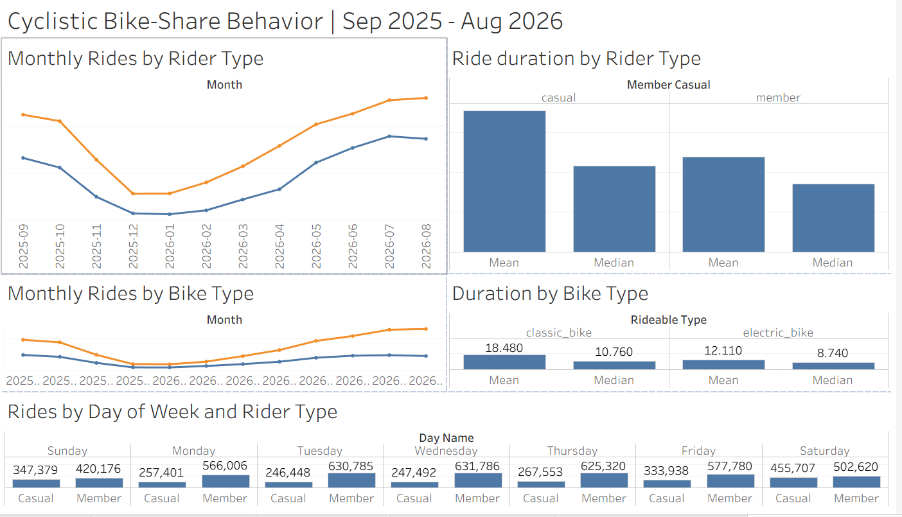

An analysis of more than 6.1 million bike-share
trips to understand how casual riders and annual
members behave differently and identify inform membership-conversion opportunities.
Python · Pandas · Excel · Tableau
BUSINESS GOAL
Convert casual riders into annual members
Cyclistic wants to understand how annual members and
casual riders use its bike-share service differently.
This case study examines rider behavior across trip duration, weekly usage,
seasonality and bike type to identify patterns that can inform strategies
for converting casual riders into annual members.
01 — ASK
The business question
Cyclistic wants to increase the number of casual riders
who become annual members. Before developing a marketing
strategy, the company needs to understand whether these
two rider groups use the bike-share service differently.
How do annual members and casual riders use
Cyclistic bikes differently?
The analysis therefore examines differences in ride
volume, trip duration, day-of-week behavior, seasonality
and bike type to identify patterns that could inform
membership-conversion strategies.
02 — PREPARE
Building a reliable 12-month dataset
The analysis uses 12 months of Cyclistic trip data,
covering September 2025 through August 2026. The monthly
CSV files contain trip-level information including rider
type, bike type, start and end timestamps, station
information and geographic coordinates.
Before combining the files, the dataset was inspected
for file consistency, date coverage and potential
data-quality issues.
DATA VALIDATION
Verifying an inconsistent January filename
During file inspection, one monthly file was named
202501-divvy-tripdata.csv, which suggested
January 2025 and appeared inconsistent with the intended
September 2025–August 2026 analysis period.
Rather than excluding the file based on its name, the
trip timestamps were inspected directly. The
started_at and ended_at
values confirmed that the records represented
January 2026.
The file was therefore retained as the January 2026 dataset.
This validation preserved the complete 12-month analysis
period while avoiding an incorrect assumption based solely
on the filename.
Dataset structure
Analysis PeriodSep 2025 – Aug 2026
Source Files12 monthly CSV files
Data LevelIndividual bike-share trips
Primary SegmentsCasual riders & annual members
Key source fields included ride ID, bike type, trip start
and end timestamps, station information, geographic
coordinates and rider membership type.
03 — PROCESS
Cleaning and preparing the analytical dataset
The 12 monthly files were combined into a single dataset
and systematically inspected before analysis. Cleaning
focused on producing reliable ride-duration measures,
validating records and creating variables required for
behavioral comparison.
6,115,982Combined records
→
6,110,391Analytical records
Data cleaning and transformation
01
Combined
Consolidated the 12 monthly CSV files into a
single analytical dataset.
02
Validated
Checked timestamps, ride records and data-quality
conditions before including observations in the
analysis.
03
Transformed
Calculated ride duration and created day-of-week
and month variables for behavioral analysis.
04
Prepared
Produced a cleaned analytical dataset for comparison
by rider type, bike type, weekday and month.
CLEANING AUDIT TRAIL
Every excluded record was accounted for
Combined source records6,115,982
Duplicate occurrences removed−35
Records outside the 12-month analysis period−268
Negative-duration rides−29
Rides exceeding 24 hours−5,259
Final analytical dataset6,110,391
Investigating unusually long rides
Before excluding rides longer than 24 hours, the records
were examined for additional data-quality patterns. All
5,259 rides were recorded as classic bikes, and 5,151
(97.9%) were missing both the end-station name and
end-station ID.
These patterns supported treating the records cautiously
during preparation of the analytical dataset. The analysis
does not assume a specific cause for the anomaly.
04 — ANALYZE
How do casual riders and annual members behave differently?
The cleaned dataset was analyzed across ride duration,
day of week, month and bike type. Four behavioral patterns
emerged that help distinguish casual riders from annual
members.
FINDING 01
Casual rides last substantially longer than member rides
Both the median and mean ride duration show that casual
trips generally last longer than member trips.
CASUAL
10.84 min
Median ride duration
VS
MEMBER
8.55 min
Median ride duration
Mean duration:
17.78 min for casual rides
versus
11.97 min for member rides.
Both median and mean duration point in the same direction:
casual trips generally last longer than member trips.
The higher means relative to the medians indicate that
longer-duration rides pull the averages upward in both
rider groups.
FINDING 02
Casual riding builds toward the weekend; member activity is stronger midweek
Daily ride volume reveals distinctly different weekly
patterns between casual riders and annual members.
CASUAL PEAK455,707
Saturday rides
MEMBER PEAK631,786
Wednesday rides
Casual Member
Sun
347k
420k
Mon
257k
566k
Tue
246k
631k
Wed
257k
632k
Thu
268k
625k
Fri
334k
578k
Sat
456k
503k
Casual activity rises toward the weekend and peaks on
Saturday. Member activity is strongest from Tuesday
through Thursday and peaks on Wednesday. The trip data
identifies these usage patterns but does not establish
the purpose of the rides.
FINDING 03
Ridership falls sharply in winter and rebounds through spring and summer
Both rider groups follow a clear seasonal pattern, with
substantially lower activity during winter and much higher
ride volumes during summer.
Casual ridersMore pronounced seasonal swing
WINTER LOW24,656
January
→
14.5×
SUMMER PEAK357,121
July
Annual membersHigher volume throughout the year
WINTER LOW112,415
December
→
4.6×
SUMMER PEAK520,923
August
Casual rides increased from 87,631 in March
to 244,654 in May and
357,121 in July, showing the acceleration
from spring into summer.
Both groups move in the same broad seasonal direction,
but casual riding shows the larger relative swing between
winter and summer. Annual members maintain higher ride
volumes throughout every month of the analysis period.
FINDING 04
Electric bikes account for most rides; classic-bike trips last longer
Bike type reveals two distinct patterns in ride volume
and trip duration.
ELECTRIC-BIKE SHARE OF RIDES
73.7%
Casual rides
68.1%
Member rides
Electric bikes account for the majority of observed
trips in both rider groups.
MEDIAN RIDE DURATION
10.76 min
Classic bike
8.74 min
Electric bike
Classic-bike trips have the longer median duration.
Mean ride duration follows the same pattern:
18.48 min for classic bikes versus
12.11 min for electric bikes.
Electric bikes account for most observed rides in both
rider groups and represent a larger share of casual rides.
Classic-bike trips last longer on both median and mean
duration. Observed usage should not be interpreted as proof
of rider preference because bike availability, pricing and
other factors are not captured in the dataset.
05 — SHARE
Casual and member riders display distinct behavioral patterns
The analysis reveals a consistent behavioral story:
casual riders take longer trips and concentrate more
activity around the weekend, while annual members generate
stronger weekday ride volumes. Both groups show pronounced
seasonality, and electric bikes account for most observed rides.
STAKEHOLDER TAKEAWAY
Casual riders take longer trips and concentrate more activity
around weekends, while members generate stronger weekday volume.
These observed differences provide a basis for testing targeted
membership messaging around the periods when casual riders are
most active.
TABLEAU DASHBOARD
Cyclistic Rider Behavior Dashboard
An interactive dashboard brings the key behavioral
comparisons together in a single stakeholder view.

Cyclistic rider behavior analysis — September 2025
through August 2026.
Visualization design decisions
Each visualization was selected according to the type of
comparison being communicated.
COMPARISON
Bar Charts
Used for ride duration and day-of-week comparisons,
where the goal is to compare values across discrete
rider, bike and weekday categories.
CHANGE OVER TIME
Line Charts
Used for monthly rider and bike-type activity because
the months form an ordered time series. Connecting
observations makes seasonality and changes over time
easier to identify.
Individual value labels were removed from the monthly line
charts to reduce visual clutter, allowing the trajectories
and seasonal patterns to remain the primary focus.
06 — ACT
Turning behavioral insights into testable marketing actions
The analysis identifies behavioral differences that
Cyclistic can use to develop and test strategies for
converting casual riders into annual members. These
recommendations are hypotheses informed by observed
behavior rather than guaranteed outcomes.
01 — OPPORTUNITY
Weekend casual-rider activity creates a clear conversion-testing window
455,707
Casual rides on Saturday
Highest casual ride volume of the week
ACTION
Test membership-conversion messaging around periods of
high casual-rider activity, particularly weekends, using
appropriate owned or paid customer touchpoints.
HYPOTHESIS
Reaching casual riders during high-activity periods may
improve the relevance and performance of
membership-conversion messaging.
02 — OPPORTUNITY
Rising spring demand creates an earlier window for membership conversion
87,631 → 357,121
Casual rides from March to July
Casual ride volume was over 4× higher in July than March
ACTION
Test membership-conversion campaigns as casual-rider
activity begins accelerating in spring, then continue
through the higher-volume summer period rather than
waiting until the seasonal peak.
HYPOTHESIS
Starting conversion activity as seasonal demand builds
may create more opportunities to reach active casual
riders before and during the highest-usage months.
03 — OPPORTUNITY
High electric-bike usage creates a relevant audience for message testing
73.7%
Of casual rides were made on electric bikes
1,589,947 electric-bike rides vs 565,971 classic-bike rides
ACTION
Test membership creative and messaging relevant to
electric-bike users, ensuring that any claims about
membership benefits, pricing or bike access accurately
reflect Cyclistic's service offering.
HYPOTHESIS
Messaging that reflects the observed bike usage of
casual riders may be more relevant to this audience
and could improve membership-conversion performance.
MEASUREMENT FRAMEWORK
How would we know if these actions worked?
The behavioral analysis identifies potential conversion
opportunities. Controlled testing can determine whether
the proposed marketing actions produce incremental membership conversions.
EXPERIMENT DESIGN
TEST GROUP
Exposed casual riders
Eligible casual riders receive the tested
membership-conversion message.
CONTROL GROUP
Comparable casual riders
A comparable group does not receive the tested
intervention, providing a baseline for comparison.
KEY METRICS
PRIMARY KPI
Membership Conversion Rate
Percentage of targeted casual riders who
become annual members.
EFFICIENCY KPI
Cost per Acquired Member
Marketing cost required to generate each
new annual membership.
ANALYSIS CUTS
Weekend vs. weekday
•
seasonal timing
•
relevant rider and bike-use segments
SUCCESS SIGNAL
Positive incremental lift in annual membership
conversion versus the control group.
Measure incrementality, not just conversions.
Campaign-attributed sign-ups alone do not establish
whether the marketing generated additional memberships.
Controlled testing provides stronger evidence of
incremental impact.
CASE STUDY CONCLUSION
Casual riders represent a measurable membership-conversion opportunity
The analysis found consistent differences between casual riders
and annual members across ride duration, weekly usage and bike type,
alongside strong seasonal variation in overall riding activity.
BUSINESS TAKEAWAY
Cyclistic can use these observed behavioral patterns to
determine when and where membership messaging should be tested,
then use controlled experiments to measure whether those
interventions generate incremental membership conversions.
The analysis identifies opportunities rather than proving causation.
Campaign effectiveness should therefore be validated through
controlled testing before broader investment decisions are made.
07 — LIMITATIONS
What the data cannot tell us
The analysis identifies meaningful behavioral patterns,
but several limitations affect how those patterns should
be interpreted.
No unique rider identifier
The dataset identifies individual trips rather
than persistent riders, so repeat usage and
individual conversion potential cannot be
measured.
No trip-purpose data
The dataset does not indicate whether rides were
taken for commuting, recreation, tourism,
exercise or another purpose.
External factors are not included
Weather, holidays, tourism, events, daylight and
bike availability may contribute to observed
seasonal and usage patterns.
Usage does not prove preference
Observed bike type reflects actual trips but does
not establish why a rider selected a classic or
electric bike.
Observational, not causal
The analysis identifies associations in rider
behavior but cannot establish that the proposed
marketing actions will cause membership
conversion.
08 — CONCLUSION
CASE STUDY CONCLUSION
Casual riders represent a measurable membership-conversion opportunity
Analysis of more than 6.1 million trips identified
consistent differences between casual riders and annual
members across ride duration, weekly behavior and bike
usage, alongside strong seasonal variation in ridership.
BUSINESS TAKEAWAY
Cyclistic can use these observed behavioral patterns
to determine when and where membership messaging
should be tested, then use controlled experiments
to measure whether those interventions generate
incremental membership conversions.
The analysis identifies opportunities rather than proving
causation. Campaign effectiveness should therefore be
validated through controlled testing before broader
investment decisions are made.